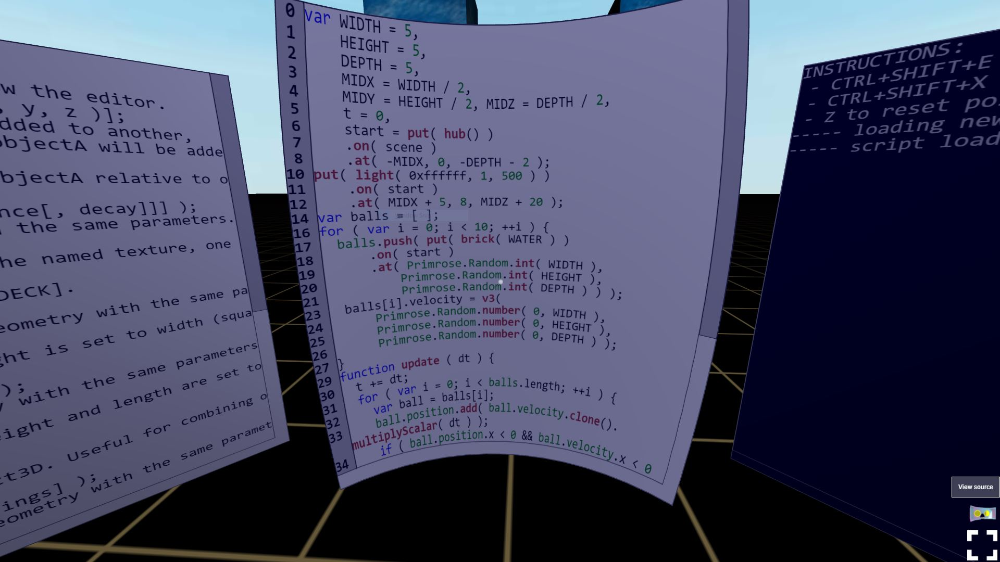
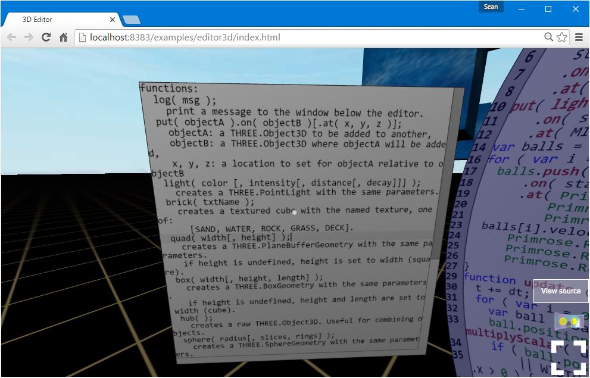
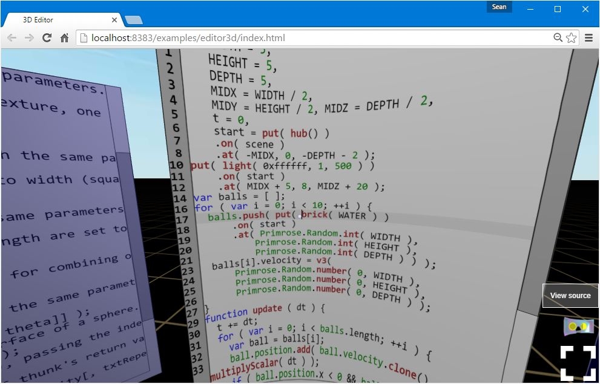
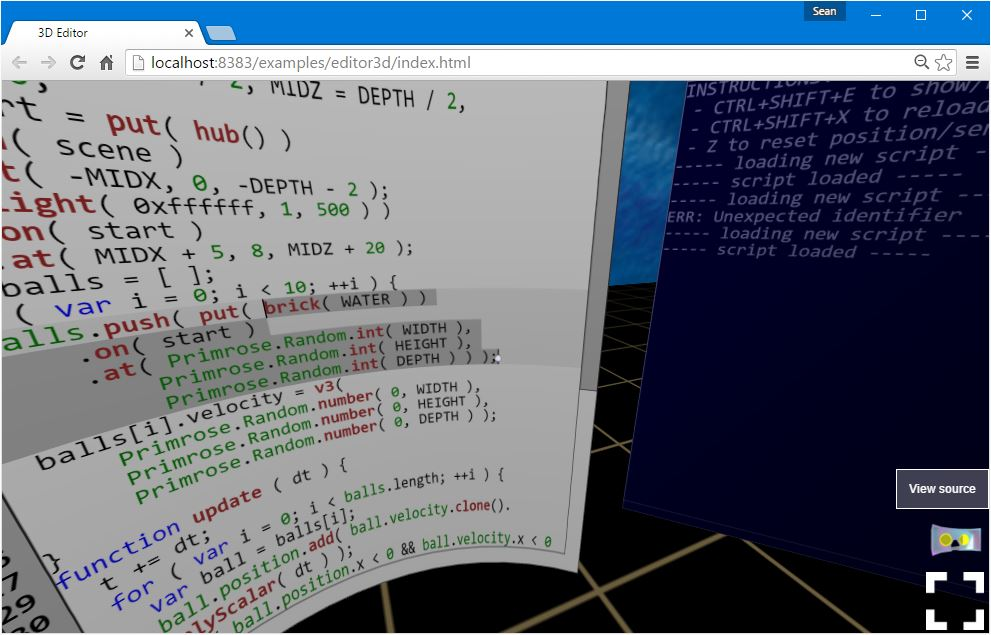

Using the VR Development Environment
Primrose is not just a web development framework. It also provides a virtual reality, live-programming environment for rapid prototyping and exploratory programming. You can try out the VR Editor now.
NOTE: there are two separate interaction modes in the VR Editor. You switch between these modes by clicking on different objects in the environment:
- Navigation Mode - mouse clicks and keyboard events move your body around the environment.
- Editing Mode - mouse clicks and keyboard events edit text within the Code Editor, but do not cause changes in your body's location.
Dev Zone Layout
Off the bat, there are three text areas visible at approximately arm's distance. We call this the "Dev Zone". It contains the interfaces you will use to read documentation, write code, and see debugging output as you work.
You may reset your view to return to the center of the Dev Zone and zero your headset's position and orientation sensors by hitting the Z key on your keyboard.
Writing in the Code Editor
The VR Editor starts in a blank space with a small demo script already loaded in the editor. The center text area is the code editor. It is rendered on the inside of a portion of a sphere, what we call a "shell". Rendering the code to the inside of a sphere means that all points of the editor will be equidistant from your viewing point when you are standing in front of the editor, helping to reduce distortion and make for a more comfortable reading experience.
You may reset the editor and reload the original demo code at any time by hitting CTRL+SHIFT+X on Windows/Linux or CMD+SHIFT+X on OS X.
Editing text in the Code Editor supports most of the common keyboard shortcuts that you have grown accustomed to in other text editors:
- Arrow keys to move around.
- CTRL+Left/Right Arrow keys on Windows/Linux, or ALT+Left/Right Arrow keys on OS X to skip backwards/forwards by tokens.
- CTRL+Up/Down Arrow keys on Windows/Linux to scroll the document window without moving the text cursor (not supported on OS X).
- Page Up/Page Down to move by whole screens of text.
- Home/End on Windows/Linux, or CMD+Left Arrow/Right Arrow key to jump to the beginning or end of a line of text.
- CTRL+Home/End on Windows/Linux, or CMD+Up Arrow/Down Arrow key to jump to the beginning or end of the document.
- SHIFT plus one of the movement commands above to select text.
- CTRL+A on Windows/Linux or CMD+A on OS X to select all text.
- CTRL+C on Windows/Linux or CMD+C on OS X to copy text.
- CTRL+X on Windows/Linux or CMD+X on OS X to cut text.
- CTRL+V on Windows/Linux or CMD+V on OS X to paste text.
- CTRL+Z on Windows/Linux or CMD+Z on OS X to undo changes.
- CTRL+Y on Windows/Linux or CMD+SHIFT+Z on OS X to redo changes that were undone.
- SHIFT+Delete to delete an entire line.
The displaying of the Dev Zone may be toggled at any time by hitting CTRL+SHIFT+E on Windows/Linux or CMD+OPT+E on OS X
Documentation Window
To the left of the Code Editor is the Documentation Window. For now, it's a static, read-only listing of the scripting functions that are available for using in the Code Editor. Eventually, it will become a live-query-able terminal for all of the documentation within Primrose.
Console Window
To the right of the Code Editor is the Console Window. For now, it's a static, read-only printing from whenever you call the log() function with a String parameter in the Code Editor, as well as a description of any errors that occurred during script execution. Eventually, it will become a live-executable terminal for both logging and REPL code execution, exactly the same as the JavaScript Console in your browser's Developer Tools view.
Selection Sphere
At the center of your view is a small sphere. This is your cursor--we call it the "Selection Sphere". It will follow your mouse, or--if you are not using a mouse--it will follow your head movements as you look around. The Selection Sphere performs different actions when activated in different contexts.
There are several ways to activate the Selection Sphere:
- clicking the left mouse button,
- tapping anywhere on the screen,
- depressing the bumper on your Google Cardboard,
- tapping the A button on your Xbox 360 controller, or
- hitting the Enter key on your keyboard.
Navigating with the Selection Sphere
When you point the Selection Sphere to the ground, it turns white and grows in size. Activating the Selection Sphere will make you jump to that position. Additionally, if you are currently in Editing Mode, activating the Selection Sphere while pointing at the ground will switch you to Navigation Mode.
Experience has shown that "blink" style movement between locations is the most reliable for avoiding nausea for people prone to simulator sickness while using a VR headset.
There are a few additional ways to navigate the environment:
- WASD keys on the keyboard, a common system from First Person Shooter video games,
- Arrow-keys on the keyboard, a simple fallback for WASD both for people who prefer arrow keys and supporting the Steam Controller,
- left analog stick on your Xbox 360 gamepad.
Making Text Selections with the Selection Sphere
When you point the Selection Sphere at a text area, it turns white and shrinks in size. If you are currently in Navigation Mode, activating the Selection Sphere will switch you to Editing Mode.
Once in Editing Mode, depressing a button to begin activating the Selection Sphere will move the text cursor to that location and begin a text selection.
You may then move the Selection Sphere, dragging out a text selection. Releasing the button to activate the Selection Sphere will set the end of the text selection.
Canceling Edit Mode without Navigating
If there is no object under the Selection Sphere, it will turn red and shrink in size. If you are currently in Editing Mode, activating the Selection Sphere at this point will put you in Navigation Mode. If you are already in Navigation Mode, activating the Selection Sphere will have no effect.

Scripting
The Code Editor window will have a demo script loaded in it at first. When you edit code, Primrose will wait for you to stop typing for a second and then run your script automatically. In the background, Primrose is inserting the code you write inside of a function. That function provides a clean workspace for you to write your code, so that any variables you create won't clobber the values defined outside of your script.
Setup and Animation
The layout of your script is very simple. At the top level, you can create any variables you want. Use this section as your one-time setup for your script. Create whatever Three.js objects you want, and add them to your scene.
At the end, you return a function that Primrose can use to update and animate your scene. That function will receive a single parameter dt, which is the amount of time in milliseconds that has elapsed since the last time the update function ran.
In other words:
grammar("JavaScript");
// perform setup here
var myBlock = put( brick( ROCK ) )
.on( scene )
.at( 0, 0, 0 )
.obj();
// Then, return an update function so Primrose knows what to do for you
// every frame
var t = 0;
return function(dt){
t += dt;
myBlock.position.x = Math.cos( t );
myBlock.position.z = Math.sin( t );
}
The code that is currently running in the example demo is:
grammar("JavaScript");
var WIDTH = 5,
HEIGHT = 5,
DEPTH = 5
MIDX = WIDTH / 2,
MIDY = HEIGHT / 2, MIDZ = DEPTH / 2,
t = 0,
start = put( hub() )
.on( scene )
.at( -MIDX, 0, -DEPTH - 2 )
.obj();
put( light( 0xffffff, 1, 500 ) )
.on( start )
.at( MIDX + 5, 8, MIDZ + 20 );
var balls = [ ];
for ( var i = 0; i < 10; ++i ) {
balls.push( put( brick( WATER ) )
.on( start )
.at( Primrose.Random.int( WIDTH ),
Primrose.Random.int( HEIGHT ),
Primrose.Random.int( DEPTH ) )
.obj() );
balls[i].velocity = v3(
Primrose.Random.number( 0, WIDTH ),
Primrose.Random.number( 0, HEIGHT ),
Primrose.Random.number( 0, DEPTH ) );
}
function update ( dt ) {
t += dt;
for ( var i = 0; i < balls.length; ++i ) {
var ball = balls[i];
ball.position.add( ball.velocity.clone().multiplyScalar( dt ) );
if ( ball.position.x < 0 && ball.velocity.x < 0
|| WIDTH <= ball.position.x && ball.velocity.x > 0 ) {
ball.velocity.x *= -1;
}
if ( ball.position.y < 1 && ball.velocity.y < 0
|| HEIGHT <= ball.position.y && ball.velocity.y > 0 ) {
ball.velocity.y *= -1;
}
if ( ball.position.z < 0 && ball.velocity.z < 0
|| DEPTH <= ball.position.z && ball.velocity.z > 0 ) {
ball.velocity.z *= -1;
}
}
}
Scripting Functions
There are a few helper functions that are available while interactively building scripts. They are shortly-named functions for common operations to make them easy to type in the editor. The functions are grouped into a few separate purposes:
- 3D Scene Objects. These objects can be added to a scene right away.
axis(length, width)- create a set of axis bars, red for X, green for Y, blue for Z. Length is how long each bar should be in its own axis. Width is how large each bar should be in the other axes.brick(txt, w, h, l)- create a textured block of a certain size.cloud(verts, color, size)- create a point-cloudhub()- create a node in the scene graph in which you can group other objects.light(color, [intensity, [distance, [decay])]] - create a light
- Geometries in need of texturing. The objects need to be bound with a material on a 3D object before they can be used in the scene.
box(width, height, length)- short-cut function for creating a THREE.BoxGeometry object.cylinder(radiusTop, radiusBottom, height, rS, hS, openEnded, thetaStart, thetaEnd)- short-cut function for creating a THREE.CylinderGeometry object.quad(width, height, s, t)- create a single rectangle.shell(r, slices, rings, phi, theta)- create a section of an inside-out sphere.sphere(r, slices, rings)- short-cut function for creating a THREE.BufferedSphereGeometry object.
- Other utility functions.
fmt(template, arg1, arg2, ...)- string formatting.log(str)- write out debugging output to the console.put(obj).on(obj).at(x, y, z)- combine objects and space them apart.range(min, max, step, thunk)- call a function a certain number of times.textured(geometry, txt, unshaded, opacity, s, t)- apply a texture to a geometry.v3(x, y, z)- short-cut function for creating a THREE.Vector3 object.
User Input
To be able to listen for user input, you create event listeners attached to the BrowserEnvironment object named this in the context of your script. To setup event listeners, in your script's setup header, call this.addEventListener("<eventName>", callbackFunction).
Currently, the available events are:
keydown- a key is depressed on the keyboard.keyup- a depressed key is released on the keyboard.keypress- a key is depressed and released on the keyboard.wheel- the user rolls the mouse wheel.mousedown- a button is depressed on the mouse.mouseup- a depressed button is released on the mouse.mousemove- the mouse is moved.touchstart- a finger touches down on a touch screen.touchend- a finger touching the touch screen is removed.touchmove- a finger is slid across the screen.pointerstart- either atouchstartor amousedownoccurs.pointermove- either atouchendormouseupoccurs.pointerend- either atouchmoveormousemoveoccurs.gazestart- occurs when the central Selection Sphere hovers over an object, inferring the user started looking at that object.gazecomplete- occurs if the Selection Sphere does not leave the object it hit ingazestartbefore thegazeLengthexpires (default 1s).gazecancel- occurs if the Selection Sphere leaves the object it hit ingazestartbefore thegazeLengthexpires (default 1s).